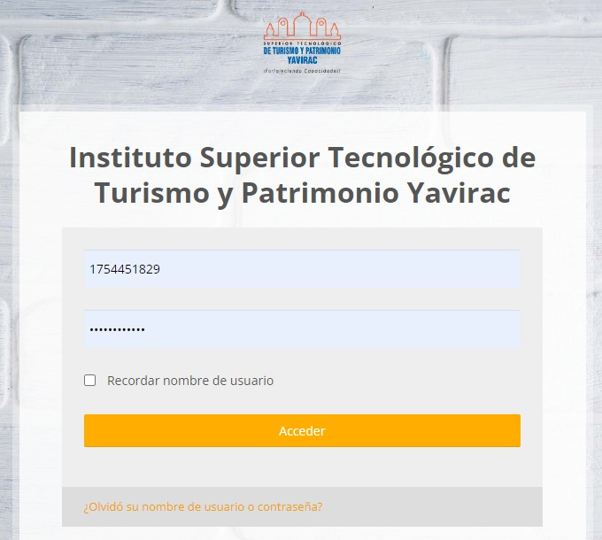
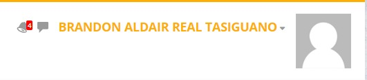
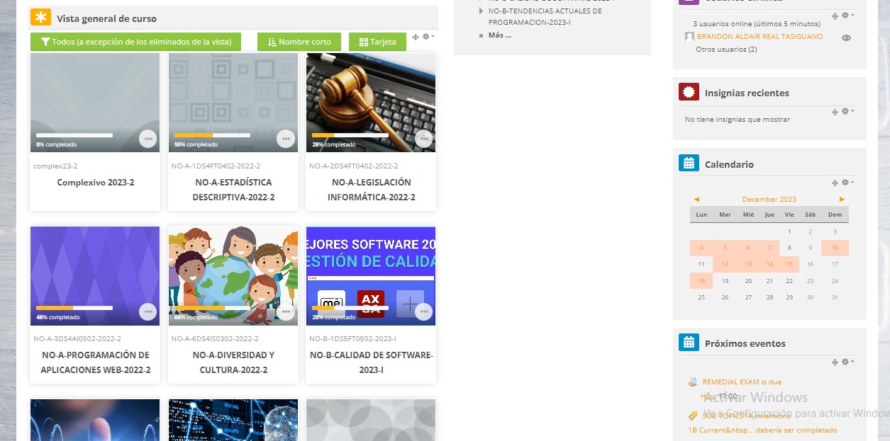
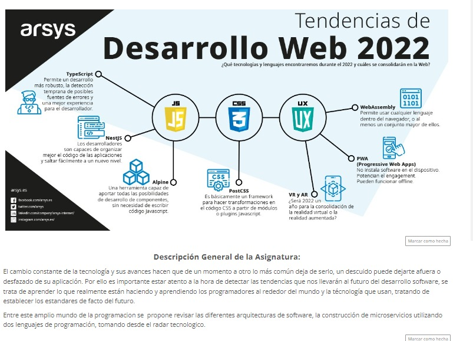
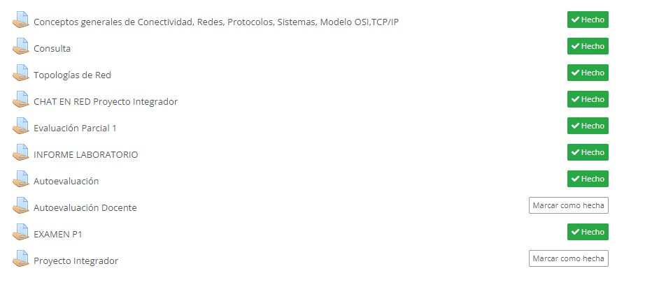
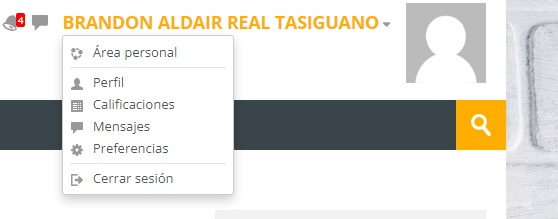
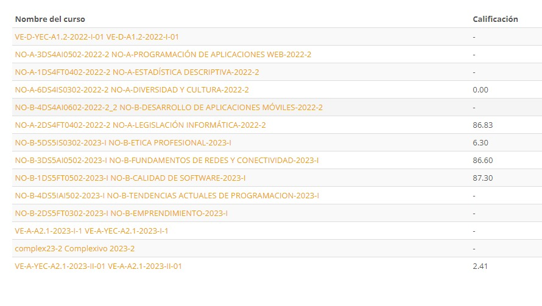
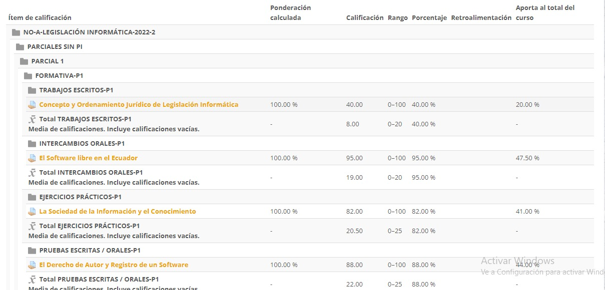

- Accede a la plataforma utilizando el enlace proporcionado por el Instituto.
EVA PLATAFORMA ESTUDIANTIL
- Ingresa tus credenciales de usuario y contraseña.

NOTA: Las credenciales para el inicio de sesión es el número de cedula, para los de primer ingreso, la contraseña es otorgada por el Instituto.
(En caso de no tener la contraseña revisar el correo institucional)
Usuario: 1748351923
Contraseña: ********
- Una vez iniciada sesión podras ingresar a la plataforma, donde en la parte superior derecha, tendras que verificar que sea tu usuario con el que ingresaste.

- Dentro de la plataforma te encontraras con la pagina principal, donde tendras todas las aulas virtuales de tus asignaturas.

NOTA: En caso de que no aparezcan sus aulas virtuales, informar al docente que le ingrese o le agrege al aula virtual de su asignatura.
- Cuando acceda a una de sus aulas virtuales, encontrara una Descripción General de lo que va a tratar la asignatura.

- También encontrara Datos Informativos del Docente a cargo de la asignatura de su carrera.
- Si vamos más abajo, encontraremos el apartado de las tareas que el docente ira activando durante el periodo academico.

- Otro apartado de la plataforma es el de las calificaciones, que esta en la parte superior dercha.

- Si das click en calificaciones, encontraras tus asinaturas, también el promedio y las notas.
(Tamnién se pueden ver las notas en la plataforma SIGA)


- Esas fueron las funciones Básicas de la plataforma estudiantil EVA.
Esperamos a ver sido de ayuda!
GRACIAS !